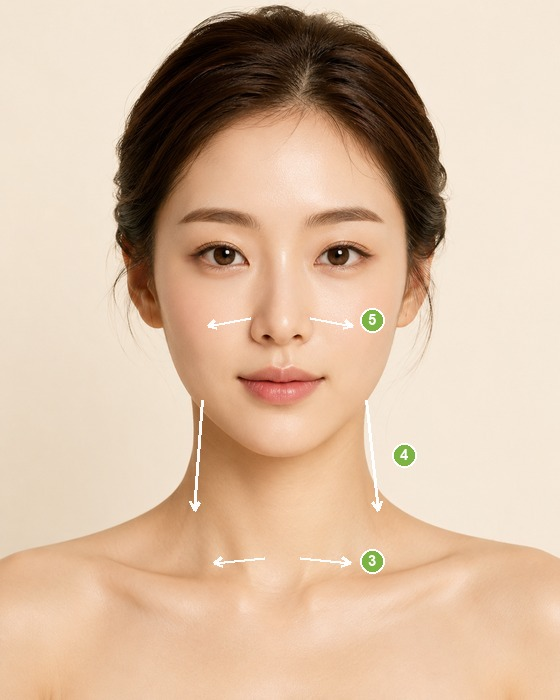

Face De-puffing Guide붓기 빼는 페이스 케어むくみ取りフェイスケア面部消肿护理指南面部消腫護理指南
Drain the puffiness behind a bigger-looking face. Lymph massage by area, plus diet & habits. A guide, not medical advice.얼굴을 커 보이게 하는 붓기를 빼보세요. 부위별 림프 마사지와 식이·생활 습관까지. 의료 조언이 아닌 참고용 가이드입니다.顔を大きく見せるむくみを流しましょう。部位別リンパマッサージと食事・習慣まで。医療アドバイスではなく参考ガイドです。排走让脸显大的浮肿。分部位淋巴按摩，加饮食与习惯。仅供参考，非医疗建议。排走讓臉顯大的浮腫。分部位淋巴按摩，加飲食與習慣。僅供參考，非醫療建議。
👍
Almost no swelling.붓기 거의 없음.むくみはほぼなし。几乎没有浮肿。幾乎沒有浮腫。 A light prevention routine is all you need. 가벼운 예방 루틴이면 충분해요. 軽い予防ケアで十分です。 保持轻度预防即可。 保持輕度預防即可。
💧
Mild puffiness.약간의 붓기.軽いむくみ。轻度浮肿。輕度浮腫。 A 3-minute morning massage clears it quickly. 아침 3분 마사지로 금방 빠져요. 朝3分のマッサージですぐ流れます。 早晨3分钟按摩就能消。 早晨3分鐘按摩就能消。
💧
Noticeable swelling.붓기가 보여요.むくみが目立ちます。浮肿较明显。浮腫較明顯。 Pair the massage with the diet & habit tips below. 마사지와 아래 식이·생활 습관을 함께 챙기세요. マッサージと下の食事・習慣を併せて。 按摩搭配下方饮食与习惯一起做。 按摩搭配下方飲食與習慣一起做。
⚠️
Pronounced swelling.붓기가 뚜렷해요.むくみが顕著です。浮肿明显。浮腫明顯。 Keep it up daily — and if it persists or is one-sided, review your habits or see a professional. 꾸준히 관리하고, 오래가거나 한쪽만 부으면 생활습관 점검이나 전문가 상담을 권해요. 毎日続け、長引く・片側だけの場合は習慣の見直しや専門家へ。 坚持每天护理；若持续或单侧浮肿，请检查习惯或就医。 堅持每天護理；若持續或單側浮腫，請檢查習慣或就醫。
Puffiness is stalled lymph fluid. Don't start at the face — first open the "drains" (collarbone, underarms), then sweep face → ears → neck → collarbone. Lymph sits just under the skin, so press gently; hard rubbing backfires.붓기는 정체된 림프액이에요. 얼굴부터 만지지 말고 막힌 곳(쇄골·겨드랑이)을 먼저 열고, 얼굴 → 귀 → 목 → 쇄골 순으로 흘려보내요. 림프관은 피부 바로 아래라 약하게 — 세게 문지르면 역효과예요.むくみは滞ったリンパ液。顔から始めず、まず出口（鎖骨・脇）を開け、顔→耳→首→鎖骨へ流します。リンパは皮膚のすぐ下にあるので優しく、強くこするのは逆効果。浮肿是淤滞的淋巴液。别从脸开始——先打开"出口"（锁骨、腋下），再按脸→耳→颈→锁骨方向疏导。淋巴就在皮肤下方，要轻柔；用力揉反而适得其反。浮腫是淤滯的淋巴液。別從臉開始——先打開「出口」（鎖骨、腋下），再按臉→耳→頸→鎖骨方向疏導。淋巴就在皮膚下方，要輕柔；用力揉反而適得其反。

img/swell-basic.jpg
✓ Steps순서手順步骤步驟
Warm the face and neck first — a warm towel or your palms wakes up circulation.먼저 따뜻한 타월이나 손바닥으로 얼굴·목을 데워 순환을 깨워요.まず蒸しタオルや手のひらで顔・首を温め、巡りを起こす。先用热毛巾或手掌温热脸与颈，唤醒循环。先用熱毛巾或手掌溫熱臉與頸，喚醒循環。
Lightly knead the underarms to open the lymph exit.겨드랑이를 가볍게 주물러 림프 출구를 열어요.脇の下を軽くもみ、リンパの出口を開く。轻揉腋下，打开淋巴出口。輕揉腋下，打開淋巴出口。
Sweep along the collarbone, inside to outside, with soft fingertips.쇄골 위아래를 안에서 밖으로 손가락 배로 부드럽게 쓸어요.鎖骨を内から外へ、指の腹で優しく流す。用指腹沿锁骨由内向外轻扫。用指腹沿鎖骨由內向外輕掃。
Stroke the neck downward, from below the ear to the collarbone — build the drainage path.귀 아래에서 쇄골로 목을 쓸어내려 배수로를 만들어요.耳の下から鎖骨へ首を流し、排水路をつくる。从耳下向锁骨向下推颈部，建立"排水道"。從耳下向鎖骨向下推頸部，建立「排水道」。
Only now the face — always inside → out to the ears → down the neck → collarbone.그다음 얼굴 — 항상 안 → 밖(귀) → 목 → 쇄골 방향으로 흘려보내요.最後に顔 — 必ず内→外（耳）→首→鎖骨へ流す。最后才是脸——始终由内→外（耳）→颈→锁骨疏导。最後才是臉——始終由內→外（耳）→頸→鎖骨疏導。
✕ Go easy on주의할 점注意需注意需注意
Hard rubbing or pulling — lymph is shallow, so light pressure works; force irritates skin and can cause sagging.세게 문지르거나 당기기 — 림프는 얕아서 약한 압이 효과적이에요. 강한 자극은 피부 자극·처짐을 유발해요.強くこする・引っぱる — リンパは浅く、弱い圧が有効。強い刺激は肌荒れ・たるみの元。用力揉搓或拉扯——淋巴很浅，轻压才有效；用力会刺激皮肤、导致松弛。用力揉搓或拉扯——淋巴很淺，輕壓才有效；用力會刺激皮膚、導致鬆弛。
Dry skin — use a little oil or cream so you don't drag the skin.크림 없이 마른 피부에 마찰 — 오일이나 크림을 살짝 발라 끌리지 않게 해요.乾いた肌での摩擦 — オイルやクリームを少し使い、引っぱらない。干燥皮肤上摩擦——抹点油或面霜，避免拉扯。乾燥皮膚上摩擦——抹點油或面霜，避免拉扯。
Eye Area눈가 붓기目元のむくみ眼周浮肿眼周浮腫EyesEyesEyesEyes
Lids look puffy in the morning. The skin here is the thinnest on the face, so be especially gentle and never press the eyeball.아침에 눈두덩이 붓는 타입이에요. 눈가는 얼굴에서 가장 얇은 피부라 특히 부드럽게, 안구는 절대 누르지 않아요.朝にまぶたがむくむタイプ。目元は顔で最も皮膚が薄いので特に優しく、眼球は絶対に押さない。早晨眼皮浮肿型。眼周是全脸最薄的皮肤，要格外轻柔，绝不按压眼球。早晨眼皮浮腫型。眼周是全臉最薄的皮膚，要格外輕柔，絕不按壓眼球。
Eyes closed, press the inner edge of the brow with your thumb pad for about 5 seconds.눈을 감고, 눈썹 안쪽(찬죽)을 엄지 배로 약 5초간 지그시 눌러요.目を閉じ、眉頭のツボ（攅竹）を親指の腹で約5秒押す。闭眼，用拇指腹按眉头内侧（攒竹）约5秒。閉眼，用拇指腹按眉頭內側（攢竹）約5秒。
Glide along the brow bone out to the temple — repeat 3 times.눈썹뼈를 따라 관자놀이(태양)까지 쓸어요 — 3회 반복.眉骨に沿ってこめかみ（太陽）まで流す — 3回。沿眉骨滑向太阳穴——重复3次。沿眉骨滑向太陽穴——重複3次。
Lightly press just above the inner corner of the eye to wake circulation.눈머리 위(정명)를 가볍게 눌러 순환을 깨워요.目頭の上（晴明）を軽く押し、巡りを促す。轻按内眼角上方（睛明）促进循环。輕按內眼角上方（睛明）促進循環。
Lay a warm towel over the eyes for about 10 minutes — warmth releases congestion.따뜻한 타월을 눈에 약 10분 — 혈행이 풀려요.蒸しタオルを目元に約10分 — 血行がほぐれる。热毛巾敷眼约10分钟——化开淤堵。熱毛巾敷眼約10分鐘——化開淤堵。
✕ Go easy on주의할 점注意需注意需注意
Pressing or rubbing the eyeball, or dragging the under-eye skin.안구를 누르거나 비비기, 눈밑 피부를 세게 당기기.眼球を押す・こする、目の下を強く引っぱる。按压或揉搓眼球，拉扯眼下皮肤。按壓或揉搓眼球，拉扯眼下皮膚。
Puffy cheeks and cheekbones make the face look wider. Move the fluid up and out toward the ear, then down the neck.볼·광대가 부어 얼굴이 넓어 보이는 타입이에요. 수분을 위·바깥(귀) 쪽으로 보낸 뒤 목으로 내려보내요.頬・頬骨がむくんで顔が広く見えるタイプ。水分を上・外（耳）へ送り、首へ流す。脸颊、颧骨浮肿让脸显宽。把水分向上、向外（耳）推，再向下导入颈部。臉頰、顴骨浮腫讓臉顯寬。把水分向上、向外（耳）推，再向下導入頸部。
Sweep from beside the nose, across the cheek, up toward the ear.코 옆에서 볼을 지나 귀 쪽으로 쓸어 올려요.小鼻の横から頬を通って耳の方へ引き上げる。从鼻翼旁经脸颊向耳朵方向上推。從鼻翼旁經臉頰向耳朵方向上推。
Press along under the cheekbone out to the front of the ear.광대뼈 아래를 따라 귀 앞까지 밀어줘요.頬骨の下に沿って耳の前まで押し流す。沿颧骨下缘推向耳前。沿顴骨下緣推向耳前。
Finish: front of ear → below the ear → down the neck to the collarbone.마무리: 귀 앞 → 귀 아래 → 목 → 쇄골로 흘려보내요.仕上げ：耳前→耳下→首→鎖骨へ流す。收尾：耳前→耳下→颈→锁骨疏导。收尾：耳前→耳下→頸→鎖骨疏導。
✕ Go easy on주의할 점注意需注意需注意
Dragging the cheek downward, or pressing too hard — both can encourage sagging.볼을 아래로 당기는 방향, 너무 강한 압 — 처짐을 부를 수 있어요.頬を下へ引く方向や強すぎる圧 — たるみの原因に。把脸颊向下拉或用力过猛——都可能导致松弛。把臉頰向下拉或用力過猛——都可能導致鬆弛。
Jaw & Face Line턱·얼굴라인 붓기フェイスラインのむくみ下颌线浮肿下顎線浮腫JawlineJawlineJawlineJawline
A puffy jaw and under-chin can read as a double chin. Clearing the lymph here sharpens the face line.턱 아래·얼굴선이 부어 이중턱처럼 보이는 타입이에요. 이 부위 림프를 풀면 얼굴선이 또렷해져요.あご下・フェイスラインがむくんで二重あごに見えるタイプ。ここのリンパを流すと輪郭がすっきり。下巴下方、脸线浮肿会显双下巴。疏通此处淋巴可让脸线更清晰。下巴下方、臉線浮腫會顯雙下巴。疏通此處淋巴可讓臉線更清晰。
Place a bent knuckle under the chin and slide from the chin out to below the ear.손가락 둘째 관절을 턱 아래에 대고 턱끝 → 귀 아래로 밀어요.人差し指の第二関節をあご下に当て、あご先→耳の下へ滑らせる。用食指第二关节抵住下巴下方，从下巴滑向耳下。用食指第二關節抵住下巴下方，從下巴滑向耳下。
From below the ear, slide straight down to the collarbone — repeat 3 times.귀 아래 → 쇄골로 직선으로 내려요 — 3회 반복.耳の下→鎖骨へまっすぐ下ろす — 3回。从耳下直推到锁骨——重复3次。從耳下直推到鎖骨——重複3次。
Knead the base of the ears, up and down, about 8 times to boost flow.귀 뿌리를 두 손가락으로 상하 8회 풀어 혈행을 깨워요.耳の付け根を上下に約8回ほぐし、巡りを促す。揉耳根上下约8次，促进流动。揉耳根上下約8次，促進流動。
✕ Go easy on주의할 점注意需注意需注意
Pinching or twisting the jawline hard — keep the pressure light and gliding.턱선을 세게 꼬집거나 비틀기 — 압은 가볍게 미끄러지듯.フェイスラインを強くつまむ・ねじる — 圧は軽く滑らせるように。用力捏或扭下颌线——保持轻柔滑动。用力捏或扭下顎線——保持輕柔滑動。
Massage drains today's puffiness, but habits decide tomorrow's. Sodium, water, and sleep matter most.마사지로 오늘 붓기를 빼도, 내일 붓기는 습관이 좌우해요. 나트륨·수분·수면이 가장 중요해요.マッサージで今日のむくみは流せても、明日は習慣次第。塩分・水分・睡眠が要。按摩能消今天的肿，但明天靠习惯。钠、水分、睡眠最关键。按摩能消今天的腫，但明天靠習慣。鈉、水分、睡眠最關鍵。
✓ Helps도움이 돼요役立つこと有帮助有幫助
Potassium foods flush out sodium — banana, red bean, pumpkin, seaweed, spinach, avocado.칼륨 식품으로 나트륨 배출 — 바나나·팥·호박·미역·다시마·시금치·아보카도.カリウムの多い食品で塩分排出 — バナナ・小豆・かぼちゃ・わかめ・ほうれん草・アボカド。高钾食物帮助排钠——香蕉、红豆、南瓜、海带、菠菜、牛油果。高鉀食物幫助排鈉——香蕉、紅豆、南瓜、海帶、菠菜、酪梨。
Eat lighter on salt — late-night salty food, instant noodles, and alcohol are the top causes of morning puffiness.저염식 — 자기 전 짠 음식·라면·음주가 아침 붓기의 주범이에요.減塩 — 寝る前の塩辛い食事・ラーメン・飲酒が朝むくみの主因。少盐——睡前咸食、泡面、饮酒是早晨浮肿的元凶。少鹽——睡前鹹食、泡麵、飲酒是早晨浮腫的元凶。
Drink enough water — when you're under-hydrated, the body holds onto fluid instead.수분 충분히 — 물이 부족하면 몸이 오히려 수분을 가둬요.水分はしっかり — 不足すると体は逆に水をため込む。喝足水——缺水时身体反而会储水。喝足水——缺水時身體反而會儲水。
Sleep deep and enough — poor sleep stalls the lymph system and you wake up puffy.깊은 수면 — 잠이 부족하면 림프가 안 돌아 아침에 부어요.しっかり深く眠る — 睡眠不足はリンパを滞らせ、朝むくむ。睡得深而足——睡眠差会让淋巴停滞、早晨浮肿。睡得深而足——睡眠差會讓淋巴停滯、早晨浮腫。
Mind your pillow height — too flat lets fluid pool in the face; keep your head slightly raised.베개 높이 — 너무 낮으면 얼굴로 체액이 몰려요. 약간 높게.枕の高さ — 低すぎると顔に水分が溜まる。少し高めに。注意枕头高度——太低会让体液积在脸上；稍微垫高。注意枕頭高度——太低會讓體液積在臉上；稍微墊高。
✕ Go easy on주의할 점注意需注意需注意
Heavy drinking, salty late-night snacks, or chugging a lot of water right before bed.자기 직전 과음·짠 야식·과도한 물 — 아침 붓기를 키워요.寝る直前の深酒・塩辛い夜食・大量の水 — 朝むくみを招く。睡前大量饮酒、咸夜宵或猛灌水——加重早晨浮肿。睡前大量飲酒、鹹宵夜或猛灌水——加重早晨浮腫。
⚕️ This is a beauty-care guide, not medical advice. Sudden, one-sided, or painful swelling — or puffiness that won't go away — can signal a medical issue; please see a professional.⚕️ 본 가이드는 뷰티 케어용이며 의료 조언이 아닙니다. 갑작스럽거나 한쪽만, 통증을 동반하거나, 가라앉지 않는 붓기는 질환의 신호일 수 있으니 전문가와 상담하세요.⚕️ 本ガイドは美容ケア用で医療アドバイスではありません。急な・片側だけ・痛みを伴う、または引かないむくみは病気のサインの可能性があるため、専門家にご相談ください。⚕️ 本指南为美容护理用途，非医疗建议。突然、单侧或伴疼痛、以及久不消退的浮肿可能是疾病信号，请咨询专业人士。⚕️ 本指南為美容護理用途，非醫療建議。突然、單側或伴疼痛、以及久不消退的浮腫可能是疾病信號，請諮詢專業人士。
A guide, not a rule — results vary with body, habits, and consistency.정답이 아닌 참고용 가이드 — 체질·습관·꾸준함에 따라 결과가 달라요.参考ガイドです — 体質・習慣・継続によって結果は変わります。仅供参考——效果因体质、习惯与坚持而异。僅供參考——效果因體質、習慣與堅持而異。